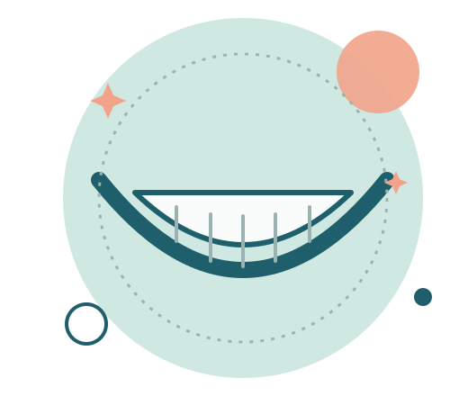
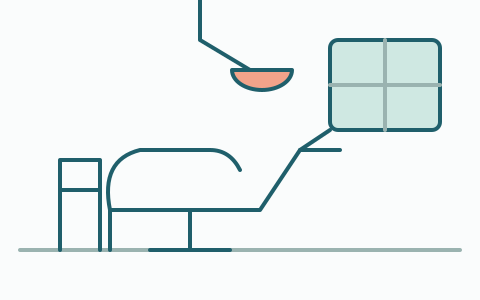
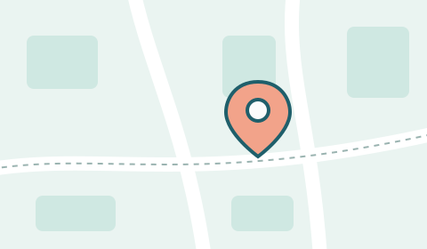

Novo em Guabiruba
Dietrich Odontologia
Consultório odontológico no bairro São Pedro, em Guabiruba.

Informações rápidas
- Endereço
Rua Antonio Carminatti, 944 · São Pedro
- Agendamento
Por telefone: (47) 99265-1303
- Horário
Sob consulta. Combine por telefone.
Atendimento
Empresa de atividade odontológica aberta em julho de 2026, no bairro São Pedro.

Modelo a confirmar com a clínica
Clínica geral
Consulta odontológicaOutros tratamentos
Sob consulta
Responsável
João Victor Dietrich, sócio responsável pela Dietrich Odontologia.
Primeira consulta em 3 passos
- 1
Ligue
Chame no (47) 99265-1303.
- 2
Combine o horário
Escolha o dia que fica melhor para você.
- 3
Venha ao consultório
Rua Antonio Carminatti, 944, São Pedro.
Onde fica
Rua Antonio Carminatti, 944
Bairro São Pedro · Guabiruba/SC · 88360-000
